사람 편에 선 리서처가 본 빅테크 CEO들
정수진 작가는 자신을 "완벽한 기술 사이에서 불완전한 인간의 마음을 통역하는 리서처"라고 소개해요. 기술자가 대부분인 빅테크에서 직업적으로 사람 편에 서는 사람이에요. 기술이 엉뚱한 방향으로 폭주하지 않게 방향을 잡는 게 자기 일이라고 해요. 진행자 김재원은 그가 거쳐 온 회사를 하나씩 짚어요.
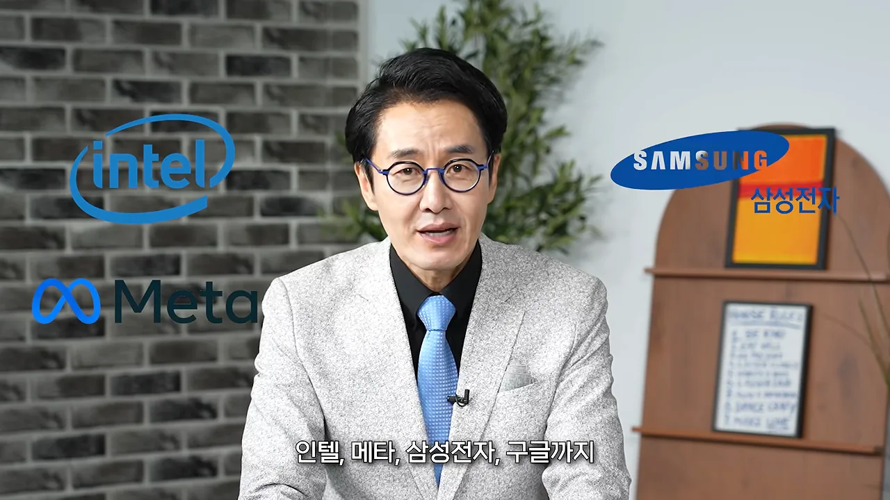
회의실에서 본 세 CEO
작가는 전사 회의나 큰 프로젝트 회의에서 CEO(Chief Executive Officer)들을 가까이 봤어요. 먼저 마크 저커버그예요. 화면 오른쪽에 그의 사진이 들어가요. 높은 사람이 대신 발표하면 저커버그는 "그걸 직접 했어요?"라고 물었어요. 아니라고 하면 "그럼 그 사람이 직접 말하세요"라고 했대요. 그래서 메타 회의에는 실제 담당자가 직접 들어가 설명하는 일이 많았어요.
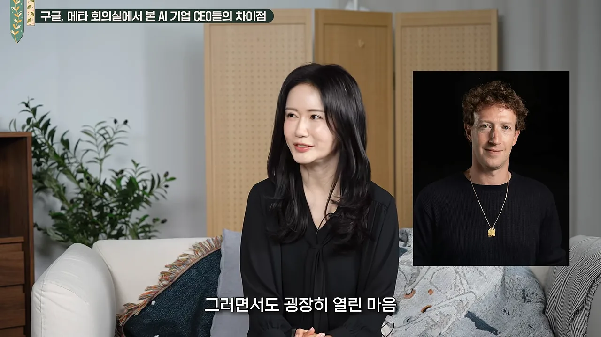
다음은 데미스 하사비스예요. 작가는 그를 어릴 때부터 천재였던 체스 선수로 기억해요. 사업에서도 판 전체를 보고 깊이 생각하며, 한 번 둔 수는 물리지 않았다고 해요. 화면에는 정장 차림의 하사비스 사진이 들어가요.
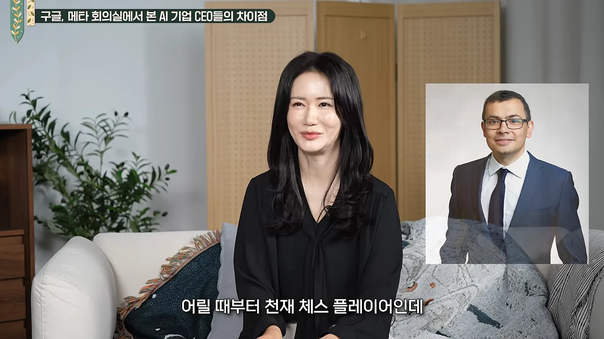
세 사람을 작가가 말한 대로 나란히 놓으면 이래요.
| CEO | 작가가 본 모습 | 위기 때 |
|---|---|---|
| 마크 저커버그 (메타) | 속사포 같은 질문, 열린 마음, 평평한 문화 | 자기 회사라 거침없이 리스크를 져요. 직원들은 누가 결정하는지 안다는 점을 좋아했어요 |
| 데미스 하사비스 (구글 딥마인드) | 판 전체를 보고 깊이 생각해요 | 한 번 둔 수는 물리지 않아요 |
| 순다르 피차이 (구글) | 조용히 뒤에서 조율해요 | 코드 레드 때 창업자 세르게이 브린과 래리 페이지에게 도움을 청했어요. 따라잡은 뒤에는 공을 오픈AI에 돌렸어요 |
작가가 놀란 공통점은 두 가지예요. 하나는 이들이 조용하다는 거예요. 목소리 큰 사람이 이끌 것 같지만, 논리와 비전으로 조용히 설득했어요. 다른 하나는 남에게 지고는 못 사는 강한 경쟁심이에요.
AI를 만드는 사람들이 먼저 규제를 말하는 이유
진행자가 묻는 건 이거예요. AI를 만드는 사람들이 왜 스스로 규제가 필요하다고 경고할까요? 작가는 이걸 고백으로 읽어요.
내가 기르기는 했지만 AI는 사실 만드는 게 아니라 길러지는 거거든요.
— 영상 05:39
뚜껑을 열어 봐도 속을 다 알 수 없으니, 어떻게 클지 모른다는 거예요. 그래서 세상에서 가장 똑똑한 사람들이 "우리만 믿지 마, 사실 우리도 무서워"라고 말하는 셈이래요. 작가는 이걸 무섭다기보다 정직하다고 받아들여요.
진행자는 2차 세계대전 무렵 오펜하이머가 느낀 감정에 빗대요. 작가는 제프리 힌턴 이야기로 이어 가요. 화면 왼쪽에 힌턴의 사진이 들어가요.
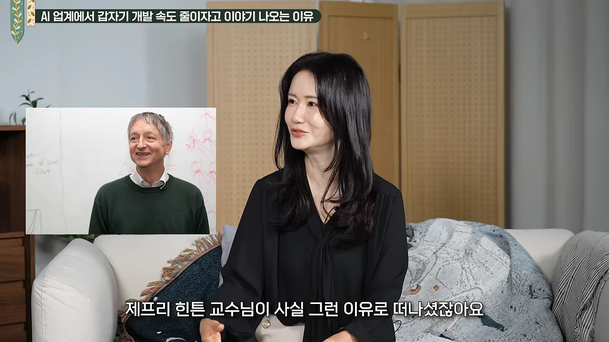
작가가 짚는 쟁점은 책임을 어디에 두느냐예요. 회사 안에 두면 회사가 스스로 규제해요. 회사 밖에 두면 정부와 사회가 함께 들어와요. 진행자는 결국 주도권을 누가 쥐느냐의 문제라고 정리해요.
작가는 이걸 자녀 키우기에 빗대요. 공들여 키워도 아이가 어느 방향으로 갈지는 모르잖아요. 그래도 아이가 잘못하면 부모가 책임을 져요. 만드는 사람들이 AI를 보는 마음도 그렇다는 거예요.
챗GPT 앞에서 구글이 코드 레드를 외친 까닭
진행자는 이 대담이 책 ‘나는 코드를 모르는 AI 팀장입니다’의 가제본을 들고 하는 이야기라고 밝혀요. 책의 첫 장면이 2022년 11월, 오픈AI가 챗GPT를 내놓았을 때 구글 안의 코드 레드 상황이에요.
처음 분위기는 오히려 느긋했대요. 구글 사람들은 "우리가 설계도를 만든 사람인데, 남이 그걸로 뭘 했다고 쫄 필요는 없지"라고 생각했어요. 그런데 5일 만에 100만 명이 몰리면서 분위기가 순식간에 바뀌었어요.
응원이 기본값인 회사의 사형 선고
작가는 한국 회사와 미국 회사의 기본값을 비교해요. 삼성에서는 실적이 좋을 때도 "지금이 위기"라고 말하며 긴장을 유지해요. 미국 회사는 실적이 떨어져도 "잘하고 있어요, 더 해 봐요"라고 북돋는 치어리더가 기본이에요. 그런 회사가 코드 레드를 내린다는 건 "이대로 가면 우리 죽습니다"라는 사형 선고와 같았어요.
주가가 내려가고 직원이 크게 동요할 수 있으니 아주 큰 리스크 테이킹이었어요. 작가는 이걸 피차이의 충격 요법으로 읽어요. AI에서는 속도가 가장 중요한데, 몸집이 커진 구글은 관료주의 때문에 느려져 있었어요. 충격 없이는 바꿀 수 없다고 본 거고, 실제로 효과도 있었대요.
60점일 때 내놓는 용기, 그런데 누구에게나 되진 않아요
진행자는 오픈AI가 100% 완성되지 않은 걸 슬쩍 내밀어 선두에 섰다고 말해요. 작가가 여기서 배운 건 "100점짜리를 만들려고 기다리는 건 쓸데없는 짓, 60점일 때 내놓는 용기가 경쟁의 포인트"라는 거예요. 하지만 같은 행동이라도 누가 하느냐에 따라 결과가 달랐어요.
| 오픈AI | 구글 | |
|---|---|---|
| 처지 | 작은 신생 기업이라 잃을 게 없어요 | 브랜드가 워낙 커요 |
| 실수했을 때 | 조롱도 받지만 사람들이 응원하고 애교로 봐줘요 | '사고'가 되고 신뢰가 무너질 수 있어요 |
| 그래서 | 60점일 때 먼저 내놓을 수 있었어요 | 조심할 수밖에 없었어요 |
코드 레드에는 다른 면도 있었어요. 구글 안에는 이미 만들어 둔 것이 많았는데, 코드 레드가 그것들을 세상에 내놓을 계기가 됐어요. 그래서 내부에는 이를 반긴 사람도 있었대요.
이 이야기를 마치며 진행자는 가제본을 들어 보이고, 책에 두 갈래 흐름이 있다고 정리해요. 하얀 표지 위쪽에 작은 글씨로 제목이 적혀 있어요.
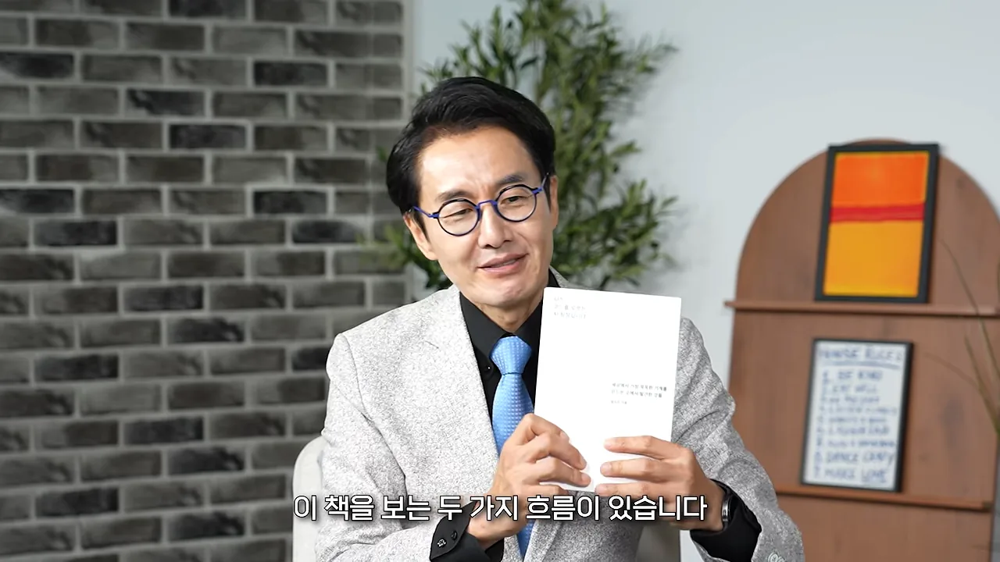
빅테크가 찾는 사람: 다른 시각과 사람을 읽는 눈
진행자는 작가가 박사급 개발자 못지않은 대우를 받으며 구글에서 AI UX 팀장으로 박사급 12명을 이끌게 됐다고 소개해요. 작가는 운이 좋았다고 하면서, 처음 그 자리를 제안받았을 때 "제가요? 왜요?" 하고 당황했던 시절이 있었다고 털어놓아요.
바탕이 된 건 메타에서의 경험이에요. UX 팀은 많아도 AI UX를 전담하는 리서치 팀은 드물었는데, 작가가 페이스북(지금의 메타)에서 그런 팀을 처음 만들었어요. 두 회사에서 작가의 처지는 정반대였어요.
- 메타: 사람을 뽑고 팀을 세우는 입장이었어요. 박사급이 기본인 문화에서 일부러 박사가 아닌 사람도 뽑았어요. 다양한 사람이 있어야 시너지가 난다고 봐서예요.
- 구글: 이미 있던 사람들 앞에 새로 간 입장이었어요. 자기보다 그 분야에 오래 있었던 대단한 사람들이라, "내가 이분들한테 뭘 해 드릴 수 있을까"부터 고민했어요.
작가가 보는 빅테크의 바람은 하나예요. 정말 다양한 시각의 사람들이 함께 있어야 진짜 혁신이 일어난다는 거예요. 충돌도 많고 힘들지만, 결과적으로 더 좋은 제품이 나온대요.
코딩만큼 중요한 사람을 읽는 눈
왜 사람을 읽는 눈이 그렇게 중요할까요? AI가 정답을 쏟아내는 시기라서, 무엇을 잘 만들고 어떻게 만드는지는 더 이상 차별점이 아니에요. 중요한 건 과녁을 어디에 두는지, 지금 있는 과녁을 옮겨야 하는지 판단하는 일이에요. 작가는 그런 사람이 무엇을 읽는지 차례로 말해요.
작가는 기술을 아는 사람들이 오히려 그 안에 갇혀 못 보는 것이 있다고 해요. 기술을 모르는 사람은 바로 그 점 때문에 "사람들은 이걸 원하지 않아요"라고 말할 수 있어요. 무지해서가 아니라 다른 자리에서 보기 때문이에요.
진행자는 AI가 삶을 편하게 하고 시간을 줄여 줬지만, 안 해도 되는 일까지 하게 만들었다고 덧붙여요. 작가는 그래서 더더욱 세 가지 능력이 비싸진다고 답해요. 보는 눈, 열 개 중 하나를 고르는 힘, 고른 것을 책임지는 태도예요. 다음 섹션의 다섯 가지가 여기서 나와요.
기계에 맡기면 안 되는 다섯 가지
작가는 질문을 거꾸로 세워요. "인간이 더 잘하는 게 뭘까?"는 의미가 없대요. 기계는 언제든 따라오니까요. 대신 "기계한테 맡기지 말아야 할 게 뭘까?"를 물어요. 그 답이 사람의 자리이고, 작가는 다섯 가지를 꼽아요.
의도: 과녁을 어디에 둘까
첫째는 의도예요. 작가는 의도를 과녁에 빗대요. 이 대목에서 화면은 화살이 꽂힌 양궁 과녁으로 바뀌어요.
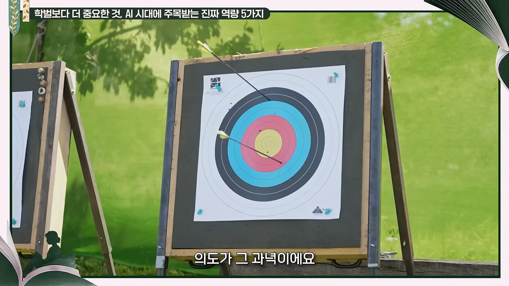
안목과 책임
안목은 많은 선택지 중에 하나를 고르는 눈이에요. 작가는 안목이 재능이 아니라고 강조해요. 실패하고 삽질한 시간이 쌓여서 생긴 눈이라는 거예요. 그리고 기계는 결국 데이터의 평균인데, 이런 안목은 데이터로 옮겨져 있지 않아요. 그래서 값진 거래요.
책임은 일이 실제로 벌어졌을 때 값을 누가 치르느냐의 문제예요. 그건 결국 사람이에요. 그래서 일의 앞단에서 "이 값을 누가 치르지?"를 먼저 묻고, 자기 이름을 걸 줄 알아야 한대요.
공감과 의미
공감을 작가는 흔한 뜻과 반대로 설명해요. 다들 고개를 끄덕이며 "네 말에 동조해"라고 하는 게 공감 같지만, 실제로는 그 반대인 경우가 많대요. AI는 늘 맞장구를 치지만, 친구는 "솔직히 말해도 돼"라며 쓴소리를 해요.
그 공감이라는 게 사실 관계를 거는 거거든요.
— 영상 15:41
이 말을 잘못하면 사이가 틀어질 수 있어요. 그래도 진심으로 아끼니까 하는 말이고, 이건 AI에게 없어요.
의미는 "왜 이걸 하는 거지?"라는 큰 질문이에요. 작가는 AI가 나온 뒤 자기 팀이 하는 일의 상당 부분이 "이건 안 해도 돼요"를 쳐내는 일이 됐다고 해요. 할 수 있는 일이 넘칠수록, 할 필요가 없는 일을 골라내는 사람이 필요해진 거예요.
결핍을 새로운 시각으로 뒤집은 커리어
진행자는 이 다섯 단어가 20년 넘게 실리콘밸리 회의실을 드나든 경험에서 나왔다고 짚어요. 그런데 처음 들어가기는 쉽지 않았어요. 작가는 겉으로는 내성적이고 얌전해 보이지만, 돌아보면 무모했다고 해요. 문 앞에서 차례를 기다리는 사람이 아니었고, 문이 안 열리면 문틈을 비집거나 문짝을 떼어 냈대요. 그만큼 절실했어요.
보스턴에서 일본까지
이야기는 보스턴에서 시작해요. 화면에는 보스턴 시내를 내려다본 항공 사진이 나와요.
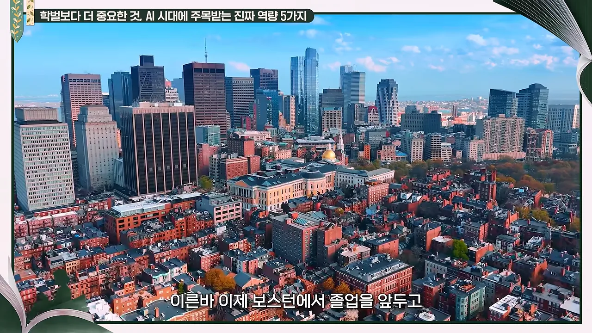
작가는 직접 연락해 포트폴리오를 들고 하이어링 매니저를 만났어요. "이 팀에 오면 이런 면에서 기여할 수 있다"고 말했고, 그분이 그걸 귀엽게 봐 줬대요. 작가는 "이것밖에 없으면 나는 아무 기회도 없구나, 창피 당하면 당하면 되지"라는 마음이었다고 해요. 그 뒤로 이어진 길을 영상에 나온 순서대로 그리면 이래요.
flowchart LR A["보스턴 졸업 전
인사 담당자에게 직접 연락"] --> B["인턴십"] B --> C["샌프란시스코 취업 박람회
'엔지니어 찾는데 문과생이…'"] C --> D["인텔 일본 지사
마케팅팀"] D --> E["메타
AI UX 리서치 팀을 처음 만듦"] E --> F["구글
AI UX 팀장"]
"우리랑 똑같은 사람을 뽑으면 무슨 의미가 있어?"
인텔 일본 지사에서 연락이 왔을 때 작가도 의아했어요. 왜 미국에서 공부한 한국인 여성을 일본에서 찾을까요? 마케팅은 그 나라 시장과 문화, 언어를 깊이 알아야 해서 외국인을 뽑는 일이 드물거든요. 작가가 직접 묻자, 나중에 본부장까지 된 여성 상사는 이렇게 답했어요.
우리랑 똑같은 사람을 뽑으면 무슨 의미가 있어? … 너는 새로운 시각을 내줘.
— 영상 19:02
일본 사람들은 자기 문화와 시장을 너무 잘 알아서 오히려 새로운 관점이 없는 게 불안하다는 거였어요. 이 말이 작가의 커리어 철학이 됐어요. 결핍이라고 여겼던 것을 뒤집으면 "여기서 이걸 할 수 있는 사람은 나밖에 없다"가 돼요.
뽑는 자리에 서서도 같은 마음으로
채용하는 자리에 가서도 작가는 일부러 모험을 했어요. 업계가 기대하는 리서처의 틀 대신, 다른 경험을 가졌지만 가능성이 있는 사람을 많이 뽑았어요. 인텔에서는 재무를 하던 사람을 뽑았는데 아주 잘했대요. 그 분야를 모르기 때문에 오히려 창의적으로 접근할 수 있었던 거예요.
진행자는 작가가 콜드 메일로 기회를 잡아 왔다고 짚어요. 이 대목에서 화면에는 숫자 315가 적힌 메일 아이콘이 떠요.
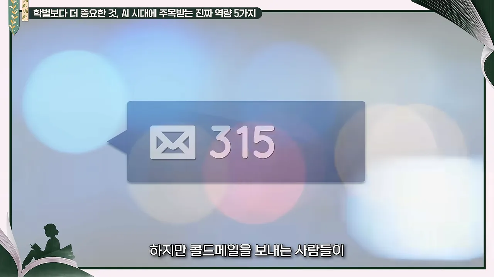
모두 만나지는 못하니 시스템을 만들었어요. 금요일 오전 한두 시간을 오피스 아워로 열어 두고, 주로 젊은 대학생이나 스펙이 많지 않은 사람을 만나요. 자기도 그랬기 때문에, 조금씩 시간을 내 주는 게 그들에게 도움이 된다고 믿어서예요.
답하는 AI에서 행동하는 AI로, 그리고 사라진 첫 칸
진행자가 묻는 건 앞으로예요. 챗GPT 이후 삶이 많이 바뀌었는데, 이 파급력은 어떻게 될까요? 작가는 데미스 하사비스가 "AI가 일으키는 변화는 산업혁명보다 열 배 크고 열 배 빠를 것"이라고 한 말을 떠올리며, 그걸 현장에서 많이 체감했다고 해요. 그리고 다른 각도에서 보자고 해요. 지난 5년과 앞으로의 5년은 종류가 전혀 다르다는 거예요.
지난 5년은 기계가 답하는 시대였어요. 오답도 많아서 "얘 여전하네" 하며 짜증 냈지만, 버리고 넘기면 그만이었어요. 앞으로 5년은 기계가 행동하는 시대예요. 에이전트가 나 대신 움직이고, 그 행동은 되돌릴 수 없어요. 통장에서 돈이 나갈 수도, 일정이 바뀔 수도, 아이 학교에 문제가 생길 수도 있어요.
챗봇 창이 사라지는 날
작가가 꼽는 큰 변화가 하나 더 있어요. 지금은 챗봇 창에 우리가 물어봐요. 그런데 머지않아 그 창마저 없어질 거래요. 이 대목에서 화면은 주방에서 파티를 준비하는 가족 위로 그래프와 수치가 떠다니는 장면으로 바뀌어요.
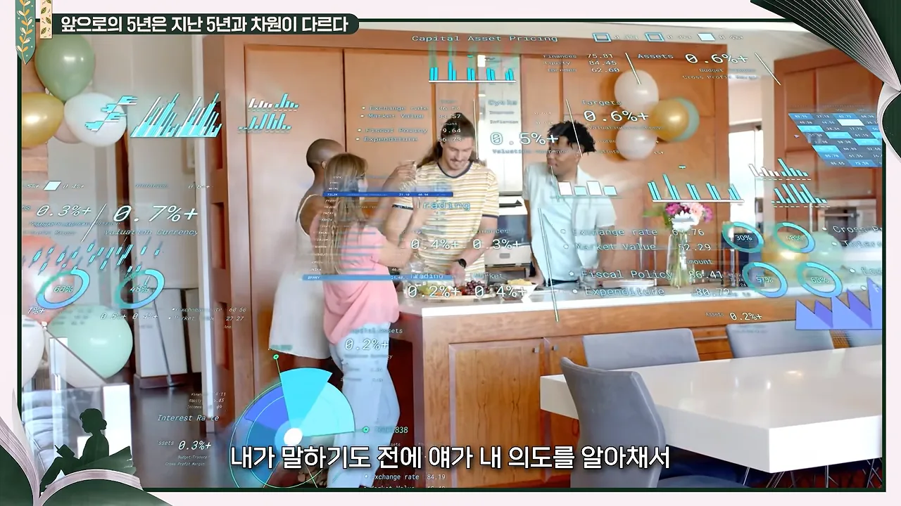
진행자는 그게 결국 AI가 나를 간섭한다는 뜻이라고 받아요. 넷플릭스나 유튜브가 취향을 파악해 콘텐츠를 계속 밀어주듯, 나도 모르게 기계가 주는 공간에 갇힐 수 있다는 거예요. 게다가 알아서 행동해 놓고 "이거 좋아하는 거 아니었어요?" 하면 곤란하다고 덧붙여요.
사다리의 첫 칸이 사라졌어요
진행자는 신입이 들어설 자리가 없다고 말해요. 1년 차부터 5년 차가 하던 일을 AI가 하고 있으니까요. 작가는 "지금 세대한테 너무 미안하다"고 답해요. 예전에는 사수 밑에서 곁눈질로 배웠고, 그게 곧 학교였어요. 화면에는 정장 차림의 선배 둘과 신입이 함께 걷는 장면이 나와요.
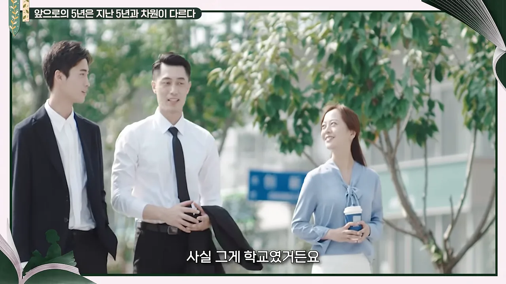
회사는 경력자만 뽑아요. 작가는 이걸 커리어 사다리에서 첫 칸을 없애 버리고, 이제 막 사회에 나온 사람에게 기어 올라오라고 하는 꼴이라고 말해요.
딸에게 해 준 대답
작가의 딸은 대학교 2학년이에요. 요즘 아이들은 "코딩 하나 더 배우는 게 무슨 의미가 있지? 몇 년 뒤 뭘 할지도 모르는데"라며 우울해한대요. 작가는 이 무력감이 실패해서 생긴 게 아니라, 실패할 기회조차 없어서 생긴 거라 더 크다고 봐요.
딸이 "엄마, 나는 뭘 해야 돼?"라고 물었을 때 작가는 바로 답하지 못했어요. 20년 동안 누군가의 사수였는데 딸 앞에서 말문이 막힌 게 마음 아팠대요. 며칠 뒤 이렇게 말했어요.
- 먼저 사과해요 — 정말 미안해. 이건 네 잘못이 아니라 어른들 잘못이니 자책하지 마.
- 설 자리를 바꿔요 — AI가 답을 쏟아내는 시대니까, 네 자리는 답을 내는 쪽이 아니라 답을 의심하는 쪽이야.
- 사람이 등 돌리는 곳으로 가요 — 우르르 몰려가는 반짝이는 곳은 계속 바뀌어. 다들 등 돌리는 곳이 AI가 가장 자주 헛발을 디디는 곳이야. AI는 결국 데이터니까.
- 거기서 판을 뒤집어요 — 그곳에서 선두를 지키고, AI로 그 판을 어떻게 뒤집을지 생각해 봐.
자퇴하는 학생들, 실리콘밸리 부모들, 시니어의 몫
진행자는 예전에는 한 학기 수업이 곧 스펙이 되고 회사에서 쓰일 거라 믿고 공부했지만, 이제는 "2년 뒤면 쓸모없지 않을까?"부터 고민하는 시대라고 말해요. 작가는 실리콘밸리 풍경으로 답해요. 스탠퍼드나 버클리 같은 잘나가는 대학 학생들이 유행처럼 학교를 그만두고 스타트업으로 간대요. 휴학도 많고 아예 자퇴도 많아요.
이유는 학교에서 배우는 게 너무 늦다는 거예요. 컴퓨팅 파워도 데이터도 기업에 훨씬 많으니, 1~2년 동안 기업에서 배우는 게 더 값지다고 보는 거예요. 작가도 박사까지 하지 않은 이유가 그런 경험을 업계에서 쌓을 수 있다고 봤기 때문이래요. 그래도 고민은 남아요. 박사 과정은 지식만이 아니라 생각의 틀, 문제를 푸는 과정, 깊이 몰두하는 경험을 주니까요.
철학과 경쟁률과 '문송합니다'
진행자는 초등학생 코딩 교육 열풍이 그 아이들이 졸업하기도 전에 판도가 바뀌었고, 올해는 철학과 경쟁률이 크게 올랐다고 말해요. 작가는 문과가 낫다, 이과가 낫다의 문제는 아니라고 해요. 다만 예전에는 너무 이과에 치우쳤다면 이제는 그럴 필요가 없다는 거예요. 한국에서는 AI를 기술자가 이끈다고 생각하지만, 빅테크 최전선에서는 그 기술자를 이끄는 비기술자도 많대요.
작가는 업계에서 사실인지 모르겠다는 전제로 소문 하나를 전해요. 한 포지션에 스탠퍼드 컴퓨터과 우등 졸업생과 철학과 졸업생이 지원했는데, 바이브 코딩도 되는 요즘이라 철학과 출신이 뽑혔다는 이야기예요. 이 대목의 화면은 사람과 AI가 말풍선을 주고받는 삽화예요.
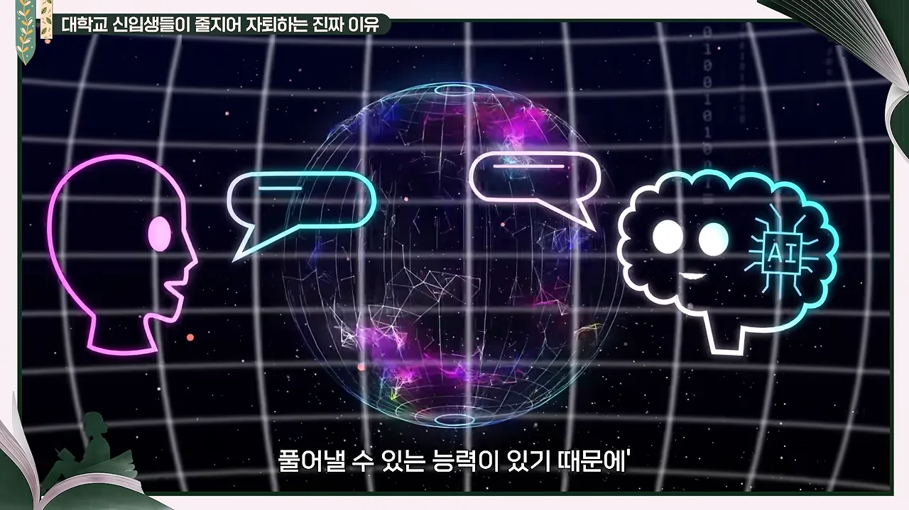
실리콘밸리 부모들이 하는 것, 하지 않는 것
작가는 AI 이전부터 실리콘밸리의 천재들이 아이를 어떻게 키우는지 유심히 봤어요. 그들은 "무엇을 하게 할까"보다 "무엇을 안 하게 할까"를 더 고민했대요. 그중 하나가 아이를 기계와 경쟁시키지 않는 것이에요. 기계를 이기려는 사람은 결국 기계에 질 수밖에 없으니까요.
학원에 보내는 일은 드물었어요. 대신 직업의 범위를 어릴 때부터 넓혀 줘요. 의사, 변호사, 회계사만 아는 아이에게 "UX/UI 디자이너라는 직업도 있어, 뭐 하는지 알아?" 하고 그쪽 사람을 만나게 해 줘요. 작가도 친구들의 부탁으로 그 자녀들을 만나다가, 아예 실리콘밸리 중고생을 메타와 구글로 초대해 하루 체험을 열었어요. 디자이너, 리서처, 엔지니어가 함께 자기 일을 들려줬고, 행사 때마다 "하고 싶은 게 없던 아이가 생겼다"는 연락을 받았대요.
자기 아이에게도 그렇게 했어요. 뇌과학에 관심을 보이자 팀의 뇌과학 리서처를 만나게 해서 어떤 과정을 거쳐 커리어를 잡는지, 장단점은 뭔지 이야기하게 했어요. 스타트업과 벤처에 관심을 보일 때는 실리콘밸리의 김범수 님이라는, 작가는 모르던 유명한 분에게 이메일을 썼어요. 와서 이야기해 줄 수 있느냐고요. 그분은 와 줬고, 지금은 친하게 지낸대요.
회사와 시니어가 해야 할 일
작가는 이 경험을 역할 분담으로 정리해요.
| 누가 | 해야 할 일 |
|---|---|
| 회사 | AI가 더 빠르더라도 주니어에게 일부러 일을 맡겨, 배울 수 있는 '학교'를 만들어 줘요 |
| 시니어 | 사다리 첫 칸을 올라오도록 손을 잡아 줘요. 시간을 내서라도 해야 해요. 우리는 그 사다리를 받고 올라온 세대니까요 |
| 부모·어른 | 아이가 여러 직업과 사람을 만나게 해 줘요. 아이 이야기를 진지하게 들어 주는 것만으로도 아이는 큰 위안을 얻어요 |
진행자는 받은 만큼은 못 주더라도 받은 것의 일부는 내려 줘야 한다고 받아요. 사다리를 치워서는 안 된다는 거예요. 그리고 코드를 몰라도 AI 팀장을 할 수 있는 시대라며, 판단하지 말고 제한하지 말자고, 열린 마음으로 도전하고 기회를 주는 세상이 되면 좋겠다고 대담을 맺어요.